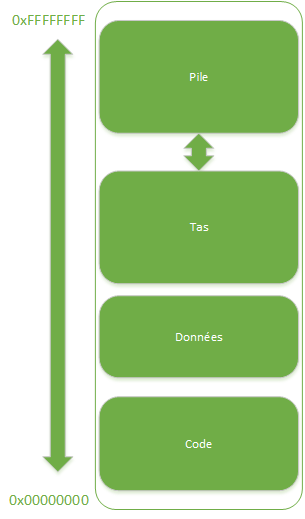
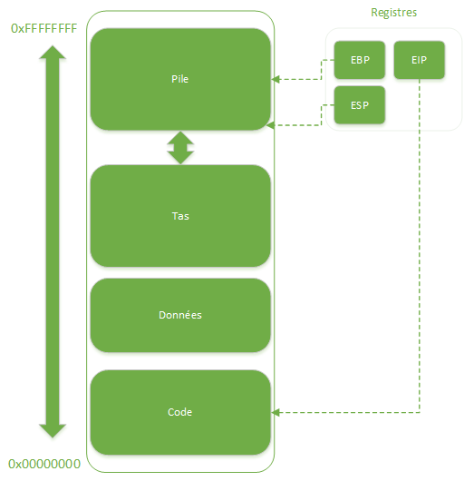

Il y a toujours une explication à ce qui apparaît mystérieux, mais seule la méthode adéquate permet de la révéler sans trop de difficultés.
Programme
- Outils peu connus de débogage dans Visual C++:
- Points d'arrêt: data breakpoints, conditions, trace.
- Fenêtre d'inspection: transtypage, listes, conversions.
- Manipulation du pointeur de prochaine instruction.
- Favoris, threads, OutputDebugString, data tips.
- Démystifier le débogueur:
- Différence entre configuration "Debug" et "Release".
- Débogage en assembleur.
Outils de débogage méconnus
Survol
Points d'arrêts
- Points d'arrêt conditionnels.
- Points de trace.
- Points d'arrêts sur adresse mémoire.
- Arrêt en fonction du nombre d'occurence, etc.
- Déclencher un point d'arrêt programmatiquement.
- Export/import, étiquettes.
Inspection de valeurs
- Modification de données.
- Transtypage de valeurs.
- Arithmétique de pointeurs.
- Conversion de formats.
- Exécution de fonctions.
- Calculatrice :)
- Personalisation avec autoexp.dat.
Autres outils
- Pointeur sur la prochaine instruction.
- OutputDebugString/IsDebuggerPresent/etc.
- Threads: freeze et thaw, SetName.
- Favoris.
- Data tips.
Débogage de code optimisé
Introduction
Débogage de code optimisé
Pourquoi c'est nécessaire ?
- Les performances du programme en mode débug sont trop mauvaises pour être productif (temps de chargement trop longs).
- Le bug est reproductible seulement lorsque le code contient des optimisations (framerate dependant).
- Un crash est très rare et il vient d'arriver...avec l'exécutable optimisé.
- Le code source n'est pas disponible.
Comment faire ?
- Briser le mythe "débogage seulement en configuration Debug".
- Utiliser les symboles.
- Maîtriser le désassembleur.
Options de configuration
- Configurations par défaut.
- Compilation vs Liaison (code linking).
- Débogage vs Optimisation.
- Option "/d2Zi+".
Symboles
- Générer les symboles tout le temps.
- Serveur de symboles.
- Symboles système.
- Fenêtre 'modules'.
Anatomie d'un programme en cours d'éxécution

Anatomie d'un programme en cours d'éxécution
- Programme != Processus.
- Organisation d'un processus en mémoire: code + données constantes + tas + pile.
- On peut aussi voir le code comme...des données :)
Anatomie d'un programme en cours d'éxécution

Fonctionnement d'un processus
- Lecture de l'instruction à l'adresse mémoire contenue dans EIP, décodage et exécution.
- Entraîne modification de:
- la mémoire: tas, pile ou données constantes ou...code.
- un ou plusieurs registres.
Observons cela avec le débogueur
- Fenêtre "modules": où se trouve le code ?
- Fenêtre "mémoire": où se trouvent les "données" ?
- Fenêtre "registres".
Premier exemple
- En release, impossible d'ajouter un point d'arrêt ailleurs que sur le "return 0".
- Valeurs présentes/absentes (debug/release) dans la fenêtre d'inspection des valeurs.
- Le "Set next statement" (flèche jaune) ne fonctionne pas "correctement" en release.
Deuxième exemple
- Comme pour l'exemple numéro 1, la plupart des points d'arrêts ne sont pas valides en mode Release.
- Inlining de fonctions/méthodes.
- Pourquoi utiliser des nombres aléatoires ?
- Emplacement en mémoire de la variable statique.
Fonctionnement bas niveau de quelques mécanismes courrants
Principales structures d'un programme écrit en C++
- Arithmétique, affectations.
- Structures conditionnelles et itératives.
- Appels de fonctions et de méthodes.
Arithmétique, affectations
- MOV, ADD, SUB
- Modes d'adressage: immédiat, registre, mémoire.
- Sur x86 il n'est pas possible d'utiliser un accès mémoire/mémoire, besoin de passer par un registre intermédiaire.
- Flags.
Structures conditionnelles et itératives
- if, else, else if, for, while, etc.
- JMP, JNE, J.., CMP.
- Flags.
Appels de fonction
- Pile, cadre de pile, contenu d'un cadre de pile.
- Evolution de la pile au cours des appels, stack overflow.
- CALL, RET, PUSH, POP.
- Accès aux paramètres + locales: EBP, ESP, FPO.
- Conventions d'appel: cdecl, stdcall (aka WINAPI), this.
- Pourquoi plusieurs conventions d'appel ?
- Edit & Continue.
- Appel de fonctions Vs appel de méthode Vs appel de méthode virtuelle.
Informations fiables
- Layout d'une variable/instance: le compilateur ne peut pas optimiser le layout d'une structure.
- vfptr: excellent indice pour savoir si l'on examine le bon type d'objet.
- variables statiques/globales: toujours au meme emplacement mémoire.
- La valeur de retour d'une méthode/fonction est toujours dans eax/ax/al.
Informations pas fiables
- Callstack: absence de symboles + FPO, inlining, etc.
- Tooltip du débogueur, que ce soit en mode "source" ou "desassembleur".
- Watch window pour les symboles de variables locales/paramètres.
Informations pas fiables
- Callstack: absence de symboles + FPO, inlining, etc.
- Tooltip du débogueur, que ce soit en mode "source" ou "desassembleur".
- Watch window pour les symboles de variables locales/paramètres.
Autres astuces intéressantes
- Comment déclencher un point d'arrêt selon l'appelant (EBP, ESP).
- #pragma optimize on/off.
- Afficher les variables d'environnement: $env=0.
Conclusion
Sujets importants non traités
- Nombres flottants (registres/instructions/stack spécifiques)
- Génération/utilisation de crash dumps.
- Génération/utilisation de fichiers .map.
- Débogage sur plateforme 64 bits...
Pour aller plus loin
- "Debugging Applications" par John Robbins, Microsoft Press.
- "Assembly Language For Intel-Based Computers", Kip R. Irvine, Pearson.
- Intel Architecture Software Developer's Manual, en ligne à http://www.intel.com/.
D'autres méthodes
Merci !